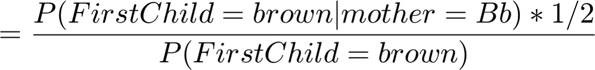
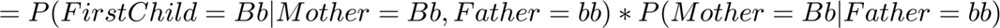

Contents
close all; clear;
1 Bayes rule and eye color
Let blue eye gene = b, brown eye gene = B. given Father has blue eyes, he must be
given mother has brown eyes, She must carry a B. we assume
because we have no knowledge about the other allele.
- a)
The probability that Mother has a b gene given the child has a brown eye is

The two terms assuming knowledge about mother but not about the child.
Assuming we don't know what eye color the child has, but know that the mother is a Bb. Given Father is bb, we know that the child has half chance of getting either eye colors
If we assume the mother doesn't carry a b gene, then the child will always be a brown eye.

Combine them together, we get

Thus
given the Child and Mother have brown eyes and the Father has blue eyes, The probability that the Mother carries a b gene is 1/3.
- b)
We know the Father is bb, because Children must carry a b from Father. If They have brown eyes, They must be Bb.
Using Bayes rule, It equals
The genotype of the first child won't affect the second, so
So
The demoninator

So
- c)
let
It equals
The denominator
Thus
Invert both sides
Move terms
Thus
Given
So
2 Poisson neurons
- a)
function sample = randp(pdf,num) cdf = cumsum(pdf); % cumulitive probability function, set partition points between [0 1) sample = rand(num,1); % uniform random numbers for ii = 1:num sample(ii) = sum(cdf<sample(ii)); % transform according to partition points end
k = 0:20; mu = 5; % mean rate over the interval p = (mu.^k * exp(-mu))./factorial(k); % PDF for infinite length p = p/sum(p); % normalize
Plot the histogram
h = zeros(21,4); % allocate space for histogram for m=2:5 N=10^m; % sample size samples = randp(p,N); % generate N samples h(:,m-1) = hist(samples,k)/N; end figure; hold on line=plot(k,p); handle = bar(k,h); label = cell(1,4); label{1} = '10^2 samples'; label{2} = '10^3 samples'; label{3} = '10^4 samples'; label{4} = '10^5 samples'; legend([line,handle],['PDF',label]); xlabel('spike counts') ylabel('freq') title('spike count distribution for different sample number')
As we can see, as sample number increase, distribution becomes closer to p
for m = 2:5 SE(m-1) = sum((h(:,m-1)-p').^2); end figure; plot(2:5,SE,'b-*') xlabel('log(#sample)') ylabel('squared difference')
- b)
For two neurons
mu1 = 2; % rate of the second neuron q = (mu1.^k * exp(-mu1))./factorial(k); q = q/sum(q); % PDF of the spike count of neuron 2
pq = conv(p,q)'; % PDF of the sum of spikes h = zeros(41,4); for m=2:5 N=10^m; samples = randp(pq,N); h(:,m-1) = hist(samples,0:40)/N; end figure; hold on line = plot(0:40,pq); handle = bar(0:40,h); label = cell(1,4); label{1} = '10^2 samples'; label{2} = '10^3 samples'; label{3} = '10^4 samples'; label{4} = '10^5 samples'; xlabel('sum of spike count') ylabel('freq') legend([line,handle],['PDF',label]); title('spike count summation distribution for different sample number')
Again, as sample size increase, the distribution becomes closer to the PDF
for m = 2:5 SE(m-1) = sum((h(:,m-1)-pq).^2); end figure; plot(2:5,SE,'b-*') xlabel('log(#sample)') ylabel('squared difference')
- c)
For a third neuron whose rate equals the sum of two, the spike count histogram is the same
k = 0:40; mu2 = 7; r = (mu2.^k * exp(-mu2))./factorial(k); r = r/sum(r); if all(abs(r'-pq)<1e-5) disp('two distributions are the same') else disp('two distributions are different') end
two distributions are the same
If we record a new spike train I can't tell whether the spikes came from one or two neurons just by looking at their distribution of spike counts.
3 Central Limit Theorem
- a)
h = zeros(21,4 ); for m=2:5 N=10^m; samples = rand(N,2); samples = mean(samples,2); h(:,m-1) = hist(samples,0:0.05:1)/N; end figure; hold on handle = bar(0:0.05:1,h); label = cell(1,4); label{1} = '10^2 sets'; label{2} = '10^3 sets'; label{3} = '10^4 sets'; label{4} = '10^5 sets'; legend(handle,label) title('distibution of the average of 2 samples')

As the sample size increase, the distribution becomes more like a triangular shape. This is the result of convoluting two uniform distributions (triangles) and scale the x axis by 2
- b)
h = zeros(21,4); for m=2:5 N=10^m; samples = rand(N,3); samples = mean(samples,2); h(:,m-1) = hist(samples,0:0.05:1)/N; end figure; hold on handle = bar(0:0.05:1,h); label = cell(1,4); label{1} = '10^2 sets'; label{2} = '10^3 sets'; label{3} = '10^4 sets'; label{4} = '10^5 sets'; legend(handle,label) title('distibution of the average of 3 samples')
h = zeros(21,4 ); for m=2:5 N=10^m; samples = rand(N,4); samples = mean(samples,2); h(:,m-1) = hist(samples,0:0.05:1)/N; end figure; hold on handle = bar(0:0.05:1,h); label = cell(1,4); label{1} = '10^2 sets'; label{2} = '10^3 sets'; label{3} = '10^4 sets'; label{4} = '10^5 sets'; legend(handle,label) title('distibution of the average of 4 samples')
h = zeros(21,4); for m=2:5 N=10^m; samples = rand(N,5); samples = mean(samples,2); h(:,m-1) = hist(samples,0:0.05:1)/N; end figure; hold on handle = bar(0:0.05:1,h); label = cell(1,4); label{1} = '10^2 sets'; label{2} = '10^3 sets'; label{3} = '10^4 sets'; label{4} = '10^5 sets'; legend(handle,label) title('distibution of the average of 5 samples')
The Distribution becomes closer to normal distribution as the sample size increase. I can't judge how much it looks like a normal distribution by simply looking at it.
- c)
A normal distribution should fit a unity line in normplot.
figure N = 1000; samples = randn(N,1); normplot(samples)
For small sample size, the normplot is far from a unity line at both tails of the distribution. As sample size increase, it's closer and closer. Also the slope gets steeper, reflecting a reduction of variance. By a dozen of samples, it's hard to tell it apart from a normal distribution.
clear handle N = 100000; figure; hold on n = 2; samples = rand(N,n); samples = mean(samples,2); handle(:,1) = normplot(samples); set(handle(1,1),'Marker','.') n = 3; samples = rand(N,n); samples = mean(samples,2); handle(:,2) = normplot(samples); set(handle(1,2),'Marker','+') n = 5; samples = rand(N,n); samples = mean(samples,2); handle(:,3) = normplot(samples); set(handle(1,3),'Marker','o') n = 8; samples = rand(N,n); samples = mean(samples,2); handle(:,4) = normplot(samples); set(handle(1,4),'Marker','x') n = 13; samples = rand(N,n); samples = mean(samples,2); handle(:,5) = normplot(samples); set(handle(1,5),'Marker','s') n = 21; samples = rand(N,n); samples = mean(samples,2); handle(:,6) = normplot(samples); set(handle(1,6),'Marker','*') xlim([0 1]) legend(handle(1,:),{'2','3','5','8','13','21 samples'},'Location','northwest')
4 Multi-dimensional Gaussians
- a)
function samples = ndRandn(mean,cov,num) if nargin<3 num = 1; end N = length(mean); if size(cov,1) ~= N || size(cov,2) ~=N disp('ERROR: covariance matrix size doesn''t match mean vector') end [U,S,~] = svd(cov); cov_sqrt = U*sqrt(S); samples = mean + cov_sqrt * randn([length(mean),num]);
- b)
If the 2-D Gaussian Distribution has mean m and covaiance S, then the marginal distribution has mean
and variance
generate 10000 pairs of samples, we can see sample statistics is close to theoretical ones
N = 10000; m = [10,30]'; covar = [81,16;16,144]; samples = ndRandn(m,covar,N); m_s = mean(samples,2); cov_s = (samples-m_s)*(samples-m_s)'/1000; disp('theoretical mean:') disp(m) disp('sample mean:') disp(m_s) disp('theoretical covariance:') disp(covar) disp('sample covariance:') disp(cov_s)
theoretical mean:
10
30
sample mean:
9.9331
30.0961
theoretical covariance:
81 16
16 144
sample covariance:
1.0e+03 *
0.7996 0.1668
0.1668 1.4447
project the sample to get marginal distributions
theta = (0:47)*2*pi/48; us = [cos(theta);sin(theta)]; % generate a circle of unit vectors samples_p = us'*samples; % project samples along unit vectors mean_p = mean(samples_p,2); var_p = var(samples_p,0,2); % calculate mean and variance of projected samples
and compare with theoretical prediction
figure; subplot(2,1,1);hold on title('comparation of sample stats and prediction') stem(theta,mean_p); stem(theta,us'*m); ylabel('mean') legend('sample mean', 'predicted mean') xticks((0:3)*2*pi/4) xlim([0,2*pi]) subplot(2,1,2);hold on stem(theta,var_p); stem(theta,diag(us'*covar*us)) ylabel('variance') xticks((0:3)*2*pi/4) xlim([0,2*pi]) xlabel('projection direction / rad') legend('sample variance', 'predicted variance','Location','southeast')
They match.
- c)
Now we transform a unit circle to a ellipse in the same way we transform a standard indepedent multi-dimensional Gaussian samples to Gaussian with desired mean and covariance
figure; hold on; grid on [U,S,~] = svd(covar); cov_sqrt = U*sqrt(S); eus = 2*cov_sqrt*[us,us(:,1)]; % ellipse w/o adding mean plot(eus(1,:)+m_s(1),eus(2,:)+m_s(2)) scatter(samples(1,:),samples(2,:),'MarkerEdgeAlpha',.2) legend('ellipse','data') axis equal
This ellipse largely captures the shape of the data cloud.
- d)
The largest variance is along the direction of the first eigenvector of covariance matrix
u = U(:,1); % first eigenvector/sigular vector for symmetric matrix
angle = atan2(u(2),u(1));
angle = mod(angle,2*pi);
angle2 = mod(angle+pi,2*pi);
var_pu = norm(u'*cov_sqrt)^2;
figure; hold on plot(theta,var_p); plot(theta,diag(us'*covar*us)) stem([angle,angle2],[var_pu,var_pu],'r*') ylabel('variance') xticks((0:3)*2*pi/4) xlim([0,2*pi]) xlabel('projection angle / rad') legend('sample variance', 'predicted variance','predicted maxima','Location','southeast')
figure; hold on; grid on [U,S,~] = svd(covar); cov_sqrt = U*sqrt(S); eus = 2*cov_sqrt*[us,us(:,1)]; % ellipse w/o adding mean plot(eus(1,:)+m(1),eus(2,:)+m(2)) scatter(samples(1,:),samples(2,:),'MarkerEdgeAlpha',.2) quiver(m(1),m(2),u(1),u(2),20,'Color','b') axis equal legend('ellipse','data','direction where we can get largest variance','Location','southeast')
close all